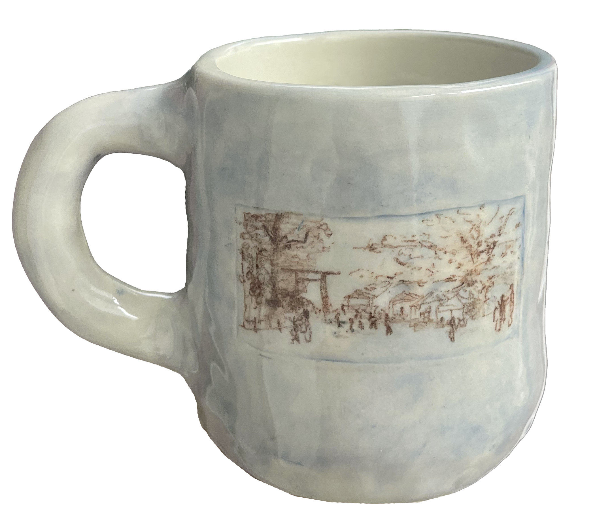

how is 利他 in japan
internship and exhibition,
tokyo 2024.
Between March and July 2024, I was in Tokyo interning with Naoko Okumura and Isa Natsumi, collaborating on their Social Design projects.
“How is 利他 in Japan” was an exhibition shown at the Portuguese Embassy in Japan and at the Mizu no Sora gallery, which documented and illustrated this experience in two parts: a professional/academic perspective and a more personal one.
The word “利他” means “altruism” in Japanese, symbolizing the community work carried out by various social action and integration companies with which Naoko's team has collaborated. Coincidentally, “利他” also sounds like my name, Rita, referring to the personal component of my experience, marked by Japanese cultural differences and generosity, evident both in the reception at all the institutions visited and at Naoko's studio and Kobushi No Ie, the care home for people with disabilities where I lived during those months.
The exhibition and all the pieces in it were produced and designed by me, and were initially divided into: “How is Altruism in Japan” and “How is Rita in Japan”. In the second edition, Naoko's team added their perspective on this experience in a third part, including illustrations, texts and animations by Isa Natsumi.

“How is Altruism in Japan” _ The first part of the exhibition documents and interprets five companies I visited, exemplifying what ‘Social Design’ can mean in different contexts.
Castanet is a bakery specializing in handmade pastries. For nearly 30 years they have been making cakes and cookies with a delicious, simple taste that seems to reach the heart. Castanet is a place where everyone can work and be themselves, with vigor, energy and the hope that both the disabled artisans and the other members of staff can always feel the joy of working together.

PoMa, an acronym for “Peace Of Mind Art”, located in Yasuragi no Mori, is a support center for people with disabilities in the Nerima district. Seeing the undeniable value of each unique piece of art created at this center, PoMa provides work and occupation according to the characteristics and desires of each person, producing and selling ceramics and other original items.

Saitama Fukko is a social company dedicated to solving social problems in the fields of welfare and agriculture. To envision a world where everyone can be physically, mentally, and socially healthy, the company provides a place for people with disabilities, those with incurable diseases, and individuals facing challenges such as NEETs, to connect with society. They are engaging in agricultural production through a new form of agricultural welfare cooperation.
Capic is the acronym for “Correctional Assoc. Prison Industry Cooperation.” It commercializes modern and traditional products made and produced in prisons and seeks to popularize them among the general public, ensuring “good price and quality.” Inmates work in prison factories, stimulating their minds and bodies with a regular routine as preparation for their reintegration into society.
The Center For The Support For The Visually Impaired develops projects to support visually impaired people in various areas. In addition to publishing school textbooks in braille, translating public relations magazines from various municipalities, and publishing the monthly magazine "Visual Impairment," it also provides braille correspondence courses in Japanese, English, music, and mathematics.

“How is Altruism in Japan” _ The first part of the exhibition documents and interprets five companies I visited, exemplifying what ‘Social Design’ can mean in different contexts. This was one of the most important, interesting and comforting parts of the experience, giving me a direct insight into everyday Japanese life in a residential area of Tokyo, living with people of different ages and backgrounds.
